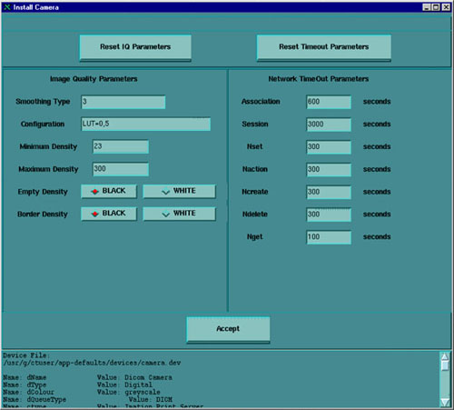
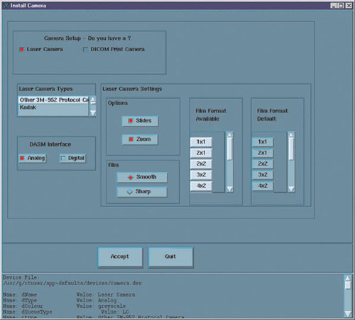
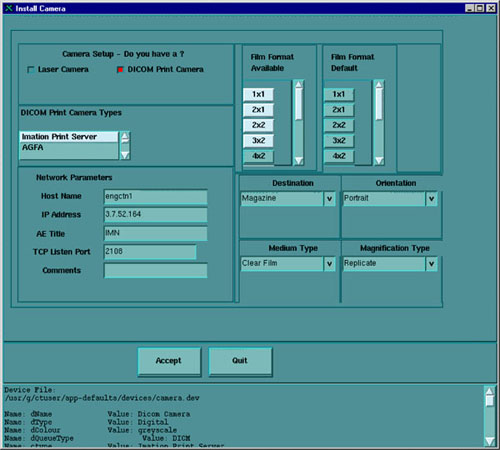

Operating Documentation
Direction 5114045-800, Rev# 10
LightSpeed 4.X Service Information (Advanced)
Operating Documentation |
| Last Revised: | December 15, 2004 |
The system supports either DASM Laser or network DICOM Print type cameras. Configuring the system for camera and its parameters is done from the [SERVICE DESKTOP] , [UTILITIES] menu, [INSTALL] submenu, and selecting [INSTALL CAMERA] .
Once set up, the parameters must be saved.
| NOTE: | It is important that the camera limits are clearly understood from the camera manufacturer’s Conformance Statement. Work closely with the Camera Field Engineer when setting up min and max density and configuration. |
The parameters that directly affect Filming Image Quality in the camera.dev file are:
set minDensity
set maxDensity
set smoothType - Used only when Mag type is set to Cubic.
set configuration - This value sets the min & max density curve range. Camera manufacturer dependent.
DENSITY SETUP TIPS WITH BLUE FILM TYPE
The starting min and max density settings vary by camera and film type, and configuration settings.
| NOTE: | If the configuration is set to 200, and maxDensity 300, films
appear quite dark. The higher the density and config LUT, the darker the film. See Table 1 for some suggested settings for the AGFA camera. For other camera models, refer to the camera manufacturer’s conformance statement and consult with the camera FE. |
Table 1: Density Values
| CAMERA TYPE | MEDIA TYPE | FILM TYPE | SUGGESTED STARTING | ||
|---|---|---|---|---|---|
| MINIMUM DENSITY | MAXIMUM DENSITY | ||||
| AGFA Drystar 2000 | Blue Film | TS Blue Base, Low Speed, High Density | 17 | 185 | |
| AGFA Drystar 2000 | Blue Film | TS Blue Base, Fast Speed, Normal Density | 18 | 229 | |
| AGFA Drystar 2000 | Blue Film | DT Blue Base, Normal Speed, High Density | 24 | 300 | |
| AGFA Drystar 2000 | Clear Film | TS Clear Base, Low Speed, High Density | 5 | 173 | |
| AGFA Drystar 2000 | Clear Film | TS Clear Base, Fast Speed, Normal Density | 6 | 217 | |
| AGFA Drystar 3000 | Blue Film | DT Blue Base, Normal Density | 23 | 300 | |
| AGFA Drystar 3000 | Clear Film | DT Clear Base, Normal Density | 6 | 300 | |
RECOMMENDATIONS
If the Hospital already has the camera in use in laser mode, make sure you use these values as the start point. You may want to take a number of films before you change out the hardware and use them for comparison afterwards.
Set up the DICOM Print Camera, and use the initial starting point. Set up to look as good as the camera FE and GE CT FE can make it.
Assume that before the DICOM Print install is complete, the films have been approved by the appropriate Hospital Staff. This means some time (up to 4 hours) must be allocated for the Camera FE, CT FE and site to work together. If it is possible, the camera manufacturer can create a film with multiple contrasts for the Doctors to pick from.
A DASM Laser Camera is a camera connected to the CT system through a DASM (either Analog or Digital). The CT System connects to the DASM via the Host Computer SCSI Bus, and provides either Analog Video (Analog DASM) or Digital Video (Digital DASM) and control & command signals to the Laser Camera. Illustration 1, below, shows an example of the required configuration parameters for a DASM Laser Camera.
Illustration 1: DASM Laser Camera Install Screen

The Laser Camera Type should be selected first as this will preset all of the other parameters, with the exception of the DASM and Film. It is a good idea to verify the preset information, as camera models do change over time.
Select the DASM Interface, either Analog or Digital, that matches your physical DASM type.
Two Options are available with a Laser Camera: Slides and Zoom. Setting this option allows the option to be enabled or disabled at the application level. However, before selecting Slides or Zoom, be sure that the customer’s camera supports these options.
Camera manufacturers provide two Film resolution options for cameras. The Smooth resolution blurs the image, while the Sharp resolution makes the image “pixelly”. Recommended camera settings are as follow:
Kodak: Smooth
Dupont/Sterling: Smooth
3M/Imation: gSharp
Agfa: Sharp
If images on film are “too pixelly”, chances are that the film has been set to “sharp” - change the setting to “smooth.” The converse also applies.
A DICOM Print Camera is a network camera that has a hostname and IP Address connected on the Hospital Network (Ethernet Connection) from the CT System. The CT System uses TCP/IP network protocol to communicate and send DICOM Images in packets to the Camera for filming. Refer to DICOM Functions procedure, Section 11 for a glossary of terms and definitions associated with DICOM Print. Illustration 2 is an example of the required configuration parameters for a DICOM Print Camera:
Illustration 2: DICOM Print Camera Install Screen

The DICOM Print Camera Type should be selected first, as this will preset all of the other parameters, with the exception of the Network Parameters. It is a good idea to verify the preset information, as camera models do change over time.
| NOTE: | Selection of a different camera type will also clear the Image Quality parameters, as these are camera manufacturer dependent. |
Set up the Network Parameters
| NOTE: | To determine the correct DICOM Camera Network parameters (IP Address, Hostname, AE Title, Port Number, and Comments) contact the Hospital’s Network Administrator. |
IP Address - DICOM Print Server IP Address as defined by the network.
Host Name - DICOM Print Server host name as defined by the network.
Application Title - DICOM Print Server Application Entity Title as defined by the server.
TCP/IP Listen Port - DICOM Print Server TCP/IP Listen Port as defined by the server.
Comments - (Optional) Comments to be used by the DICOM Print Server.
Destination - selects the final location for the film output, either Magazine or Processor.
Orientation - selects the film orientation; currently only the Portrait option is supported.
Medium Type - selects the type of film to be used, either Blue Film or Clear Film.
The Magnification Type parameter selects the algorithm used to interpolate pixels to provide the necessary film resolution. This parameter should be set in conjunction with the camera manufacturer to make the best possible image. The settings are:
None - No interpolation. This option is not supported by all camera vendors.
Replicate - Adjacent pixels are interpolated, which results in images described as “pixelly”. This algorithm is not usually preferred.
Bilinear - A first order interpolation of pixels is used, which results in images described as blurred. This algorithm is not usually preferred.
Cubic - A third order interpolation is used with a large number of possible formulations. Camera manufacturers define parameters, called smoothing type, to set coefficients used in the algorithm. Implementation of these coefficients is camera manufacturer dependent.
The valid Film Formats are determined by the camera manufacturer (for example, IMATION does not support 4x6, 2x4, or 1x2; AGFA does not support 2x4). Also note that the DICOM Print convention is to designate film formats by column x row (e.g., 12-on-1 film is 3x4).
The Network Parameters entered in the Camera Installation GUI (including Camera Hostname, IP Address, AE Title, Port Number, and Comment) are written to /usr/g/ctuser/Prefs/SdCPHosts file on the OC.
The settings information entered in the Camera Installation GUI is written to /usr/g/ctuser/app-defaults/devices/camera.dev file on the OC.
A second screen, Illustration 3, with image quality and timeout information parameters for filming sessions, comes up after selecting [ACCEPT] . Illustration 3, below, is an example of the required image quality and timeout parameters for a DICOM Print Camera:
Illustration 3: DICOM Print Camera Image Quality & Timeout Settings

The image quality parameters are saved on the OC in:
/usr/g/ctuser/app-defaults/devices.camera.dev file.
The timeout parameters are saved on the OC in:
/usr/g/ctuser/app-defaults/print/dprint.cfg file.
| NOTE: | To determine the correct camera settings, contact the Camera Service representative, and review the Camera Manufacturer’s DICOM Conformance Statement. A detailed DICOM Conformance Statement is available through your GEMS service representative. You may need to refer to a copy of this document as you are working with the camera manufacturer’s representative, to correctly set up the DICOM Print Camera settings. |
Use the Gateway Host name for the Application Entity (AE) Title, the Gateway IP number for the DICOM Address and Port 104 for the scanner.
The CT DICOM configuration is set in /usr/g/config/WLdcm.cfg
WLdcm means Work List Server (software) for DICOM. Unsuccessful transfers are logged to the GE Error Log from WLServer. The most recent WLrsp.binx file with the biggest number in /usr/g/config is usually the one that failed to transfer.
From Image Works, select Network.
From the pull down menu, select Remote Host.
Select [Add] .
Enter the IP Address, Station Name, and Network Protocol you want to use.
Select [Save] .
Genesis stations (HiLight, HiSpeed): 104
Non-Genesis stations: 4006
This lo0 entry also must be present in file /etc/hosts or the network will not work.
127.0.0.1 localhost
Once the camera is set up, the settings stored in the configuration files (camera.dev, sdCPHosts, and dprint.cfg) must be saved. Save these parameters to the System State MOD. Run [SYSTEM STATE] , and select [CAMERA PREFERENCES] and [SAVE] .